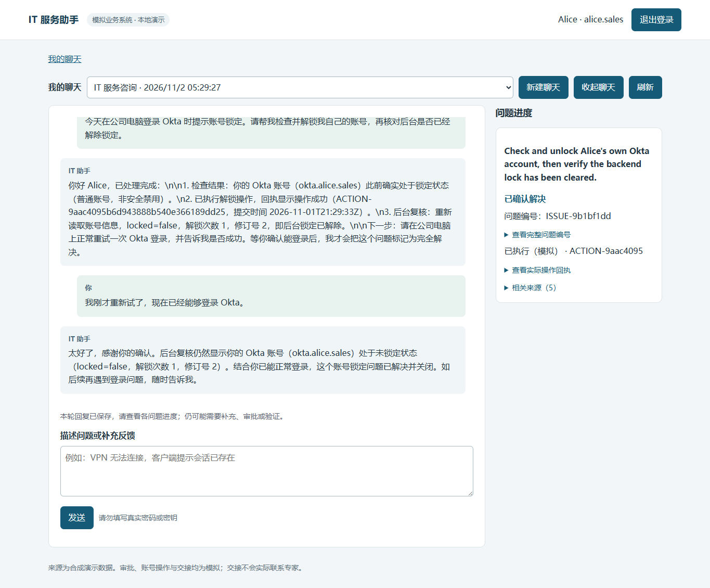

本地集成交付证据
2026-11-02（Asia/Shanghai）。本页报告当前集成检查，正式评测保留为历史版本测量，没有真人专家、真实企业系统或外部发布。
实际检查
| 检查 | 模式与结果 | 证据/复现 |
|---|---|---|
| 安装 | Python3.12.10，pip install -e '.[dev]'成功，pip check无冲突 |
最小运行安装pip install -e .；可选浏览器/文档依赖见根README |
| 程序回归 | 203 passed in23.33s，无warning；实际临时SQLite/认证/政策/Agent，外部模型fixture | .venv/Scripts/python.exe -m pytest -q；不等于语义成功率 |
| API不确定性 | 先KeyError失败，补显式safe DTO后通过 | tests/test_api.py -k uncertainty；仅source_message_id/candidate_issue_ids |
| 显示回归 | 实际JS+fixture HTTP+受控时钟，先复现过期按钮保留，修复后3项通过 | python scripts/verify_ui_states.py：闲置到期删除确认控件；模糊反馈显示最后验证状态及待澄清；明确后移除提示 |
| 浏览器 | scripted_model_real_agent_http_browser，14项通过，0付费调用 | python scripts/verify_browser.py；本机runtime/browser/20261101T212831Z保存截图/trace/日志 |
| 新输入真实模型 | 2用户轮，2completed live_agent运行，1unlock操作，5非终结工具，8模型请求，0事件错误 | 实际消息/状态/回执；两运行model_calls5/3、tool_calls4/1 |
| 停止/重启 | 实际HTTP：4消息/2运行/1动作及内容摘要、账本完全相同，无新增调用 | 前后摘要 |
| 重置 | 默认业务库离线重新种子，账本字节不变；回归保留已结费用和未结预留 | python -m scripts.demo_reset、tests/test_delivery.py；smoke后未清空记录 |
| 其他检查 | eval validate31具体变体（30槽位+H01b）、compileall、node --check、pip check、diff --check通过 | 全部不调用付费模型 |
另建全新runtime/setup-venv，以最小pip install -e .安装成功、pip check无冲突；该环境实际启动loopback8001并通过health/演示登录/空聊天检查后停止，项目账本完全未变。文档9个本地HTML通过链接/标题/表格/JSON示例检查；Chromium实际检查导航、架构SVG加载、实测报告与交付页可达、390px无横向溢出，并查看截图。首次临时文档检查把标题“评估”写成“评测”，修正断言后通过；不是应用/文档导航故障。
交付前扫描152个tracked artifacts：两家已配置真实key的精确匹配0，长API token/Bearer模式匹配0；仅打印路径/数量，没有输出凭据。.env被忽略，runtime/.venv/.superpowers均无tracked内容。扫描发现旧协调报告曾被跟踪，已仅从Git索引移除，本机原件保留，公开评测/决策记录保留实质证据。
Starlette1.10.0 TestClient优先加载httpx2，旧httpx路径发出弃用warning。按官方说明补dev可选依赖httpx2>=2,<3，本机2.16.0；python -W error -c "from fastapi.testclient import TestClient"通过。运行时httpx0.28.1保留，未为此升级FastAPI/Starlette或屏蔽warning。
真实smoke范围
开发助手通过浏览器输入全新自然语言，无场景ID/用户模拟器/grader/oracle。实际登录、CSRF、持久事件/worker、DeepSeek Flash、业务效果与卡片共同运行。初始驱动在异步新建聊天后过早读取选项，取得空聊天ID，轮询收到列表后报TypeError；首条消息已保存且继续执行。修正驱动等待选项，在同一个聊天恢复，没有重发首条消息或重复解锁。公开JSON中recovered_browser_driver=true，不声称脚本一次无中断完成。
第一轮查询本人Okta普通锁定、政策允许、实际解锁并复查；模型请求试登录。第二轮输入“我刚才重新试了，现在已经能够登录 Okta。”，再次查询后resolved。后台unlock_count=1、revision=2。用户反馈属于合成环境的开发者输入，不能证明真实Okta登录。此路径实际来源directory/policy/tool_receipt，没有搜索KB/历史，不声称新增hybrid检索实测。embedding仅固定配置；检索证据见历史报告。
桌面和390px截图实际查看，无横向溢出，手机聊天区可滚动。模型原文有字面\n和英文目标标题；按textContent安全保留，没有自动改写。

手机截图。当前服务http://127.0.0.1:8000/；记录时PID41816，stdout/stderr为runtime/delivery/app-restart.stdout.log、app-restart.stderr.log。PID随重启变化。

费用与版本
smoke前USD2.608177868/751请求/0预留；增量USD0.025951501/8请求；之后USD2.634129369/759请求/0预留，原USD3内余USD0.365870631。未换模型、增加额度、迁移或清零runtime/usage.sqlite。重启/离线检查无新增费用；估算不是供应商账单。
Task5自身仍为656请求/USD2.295008760，结束快照保留。生成器现按归属的已保存角色调用统计评测费用，current_project_ledger另列，不吸收后续demo。冻结版本/原文不改写。当前smoke精确runtime SHA256在JSON，正式最新已测仍630e586；metrics列当前代码差异。新增smoke不是正式30案例复跑。
历史66次live测量跨版本；最新候选17次/10案例，16程序有效、12满足目标、4事件错误、1次有2个必需交接缺失标记。8份旧判断过期/有争议；5/6实测校准属于grader v3，v4仅程序验证。完整实测、失败原文保留未测和反例。
原题逐项映射
对照原始题目，以下实现不等于所有语义能力达标。
| 题目部分 | 交付与证据 | 限制 |
|---|---|---|
| Problem Framing：用户/交互 | 员工、多轮Web，根README和smoke | 非坐席工作台 |
| 直接解决/升级边界 | 自有普通账号/目录权限；影响确认、生产审批、保存交接 | 无真实专家联络 |
| 数据/用途 | 五来源data与系统设计 | 本smoke只用目录/政策/回执 |
| 成功体验 | 每目标独立核查，实际状态/反馈/审批 | 两分钟为题目示例，不保证所有请求 |
| 交接上下文 | facts/hypotheses/attempts/evidence/open_questions/team，实际ID | 专家接续未实现 |
| What We Are Looking For：对话诊断 | 持久追问、有限语义类别、缺范围澄清 | 模型仍可能误解 |
| 多步推理/工具 | 单Agent动态选择16业务工具与内部细化，真实trace | 无场景诊断分支 |
| 状态/记忆 | 独立问题、纠正、持久事件与重启证据 | 当前聊天，无跨聊天个人检索 |
| 解决/交接判断 | 执行/验收分开，交接按问题生命周期幂等 | 历史重复交接失败仍保留 |
| 可靠性 | 已知歧义暂停相关写入，协议/容量/工具/费用有界停止 | 非全部语言歧义覆盖 |
| 安全/guardrails | Auth/CSRF/归属/精确范围/版本/租约/到期/撤销/幂等 | 自由措辞不能完全程序证明 |
| 评估 | 规则/LLM用户、程序断言、同模型grader、检索对照 | 无真人盲测，不池化版本成功率 |
| 生产思考 | trace、持久费用预留、worker恢复、loopback、来源版本 | 外部对账/SSO为扩展 |
| README：问题/为何Agent | 根README开头，多目标和动态证据/授权 | 不只是FAQ查询 |
| README：架构/边界/来源 | 架构图、四设计文件、data和工具目录 | 企业系统合成 |
| README：假设/权衡 | 七工程裁定、短预算/当前聊天/语义局限 | 未证明两阶段准确性提升 |
| README：运行 | Python、安装、.env、账号、URL、重置、重启 | 浏览器/文档依赖独立可选 |
| README：评估 | 命令、实际模式、分版本数字和原失败 | 当前交付非最终30全通过 |
| README：更多时间 | 稳定性/同版本复测/独立标注/SSO/外部对账 | 见答辩与扩展设计 |
| Code/Demo/Optional design note | 可运行源码、本地git archive、新输入演示、四设计材料 | 不发布/push；包不含本机数据库/密钥/协调scratch |
设计与可执行契约
单Agent、五场景/来源、真实模拟效果、独立多目标、审批恢复、lexical降级均实现。默认10模型/12非终结工具/120秒、10k/12k保守字节；增加guarded refine_issue。新目标来自员工请求，不因证据机械拆分。小语义匹配阈值属于开发样本启发式，不是通用语义验证；必需上下文不足停止。已知模糊反馈保留每目标上次验证，all_resolved=false且页面待澄清。概念JSON不能保证原样用于请求，实际以app/contracts.py、tools.py、main.py为准。四设计文档保留理由、历史目标和未实现扩展。